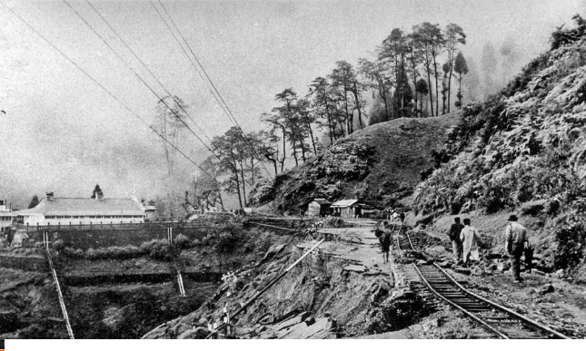

Trip in train in india

I’m Richard Cooper and I will told you the unbelievable story that I lived two months ago. The story started on the beginning of July, I was in vacation in India with my family. During a week-end it was planned to cross the Himalaya in train. This morning, we left early our hotel to arrived ahead of time at the station, the day was looking good : the newspaper predicted good weather, everything was perfect for enjoyed a good time. The station was really nice and clean, nearly there was a pub where we toke our breakfast, my wife and me shared a pile of sweet pancakes and the children took a French croissant and an orange juice.
One hour later, at 9 pm we were waiting on the platform for boarding, after few moment the railroader, whistled and blowed the loco, a dark and dusty cloud of coal smoke came out of the blue chimney, we could get on board. Inside, the wall and the ceiling was covered with a red and old tapestry, the seat seems confortable, a little of spice and Indian food was embalmed the air. The train appear pleasant. The trip was perfect, we see some beautiful landscapes, the white mist between the valley made them beautiful than ever and the waterfall seemed pierced the mist. Asleep by the homing of the loco the children was quiet.
Suddenly a violent gust of wind rattle the train and a violent rain fall accompanied it. The rain didn’t stopped and the mist became more and more thickly, few kilometers after cross the Siliguri station we have been blocked by a landslide. Me and several other passengers proposed to help to take out the rock that who was on the rails, the work was rude ans disagreeable because of the rain, the cold and the mist. When it was finished, the damage was so big that the train cannot advance more without rails reparation. During the work, I met a man Jason Lee, he was tall and skinny, he has short blond air and he was wore and light gray suit and a pair of glasses, he was a british surgeon who worked in India, the villagers help us to repair the rails but it will probably take a long time so the whole train was blocked for the day. During the afternoon, we decide to help people in the vicinity. 
Here we discovered the size of the disaster, entire houses had collapsed, some peoples were trapped in the rubble, they was still in danger and the risked to die if the don’t act quickly. As time passed, the number of victims increased. Skillful with his hands, Tom succeeded in saving many and helped others to overcome their pain. When the night was came, some passengers was stayed to spend the night with the villagers and the other came back to the train for the evening.
The night was icy and rude without pillow and sheet, but the tiredness won and everybody fall asleep. Tomorrow, after a really hard and exhausting work, we succeeded. To thank and help them in the reconstruction of their village, Lee, several other travelers and I promised to send them workers to help them.
After a well earned meal, the train finally leaves and the journey can continu. We were once again be able to enjoy the trip and the landscape but it was hard to forget the drama that had just happened. There was no other problem during the rest of the journey, we spent the end of the trip to talk with Jason , on their side the children was playing all together. Arrived at the Darjeeling station, we said goodbye to our new friend and we left each one on our side.
Few months later I received a postcard from him who sayed that for this vacation he would taked the plane.
On June 12, 1950 violent rains fell on the region causing landslides, destroying parts of the road and surrounding houses, in total that day 127 people lost their lives. Since then, the line between Siliguri Station and Darjeeling Station was closed and a new route has been created.